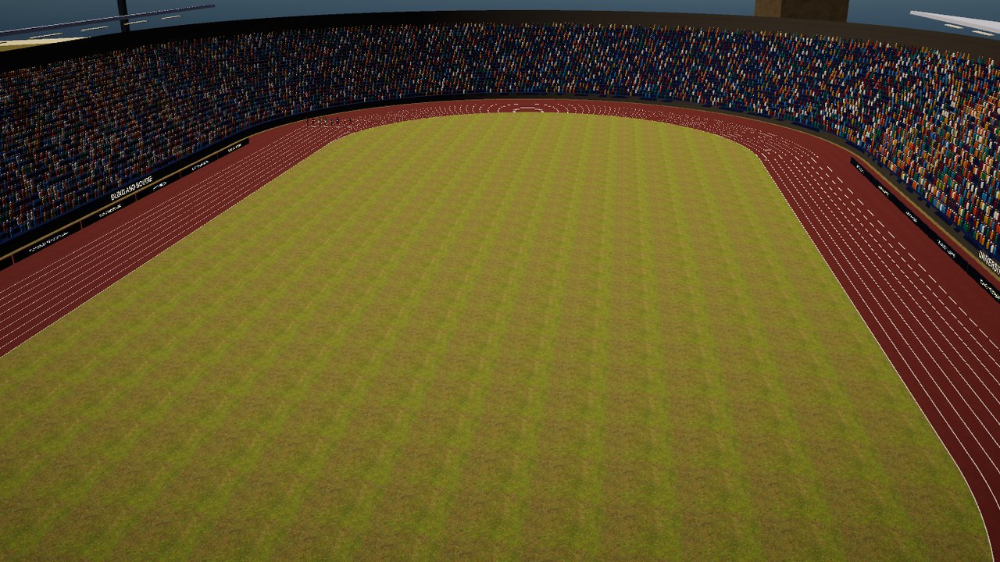

Boujee Olympics
Available now

Every PlayToEnjoy Titans game is designed to run on every level of device, from very old built-in graphics up to machines with a powerful graphics card.
About the game
Boujee Olympics is a full track and field game for everyone, live from a packed stadium at the University of Boujee Island, where two posh hosts call every race. Sighted and blind players can compete together or on their own.
The audio features are built in: spoken menus, and the wind, your breathing and your footsteps telling you how fast you are going. Switch them on or off from the menus.
Sprint, hurdle, jump and throw against the world, one button-mash at a time.
Last updated: 10 November 2026
Downloads
Free trial (beta)
Our trials are betas. We put them out early so you can play them and tell us what you think: what you love, what could be better and anything that goes wrong. Your feedback helps us improve, fine-tune and fix each game before the full release, so every bit of feedback and support goes a long way. Send us your feedback.
The trial has four events: the 100 metres, the 110 metres hurdles, the long jump and the javelin, with training and every setting. It lasts 30 days from the first time you play, and installs beside the full game with its own name and saves.
- Download for WindowsSetup file, about 575 MB.
- Download for MacMac installer (.pkg), about 240 MB.
- Download for AndroidAndroid app (.apk), about 210 MB.
How to install
Choosing a download link starts the download straight away. The file is large, so it may take a few minutes. Your browser tells you when it has finished, and the file goes into your Downloads folder.
- Windows: open the Setup file. It installs for you alone and needs no administrator password. Our games are made by an independent studio and are not signed by Microsoft, so Windows may say “Windows protected your PC”. Choose More info, then Run anyway. The installer screens are standard Windows ones that NVDA, JAWS and Narrator read.
- Mac: open the .pkg file and follow the Installer: Continue, then Install. The game is not signed by Apple, so the first time macOS may say it cannot check it. Control-click (or right-click) the file, choose Open, then Open again. If macOS still refuses: System Settings, Privacy and Security, then Open Anyway.
- Android: open the .apk file on your phone. Android asks to allow installing apps from that source (Files, Chrome or your email app): allow it, then Install. It does not come from the Play Store.
Every game comes with a Read Me that explains the controls. If you use the audio features, headphones are best: left and right matter.
System requirements
Minimum
- Windows 10 or Windows 11, 64-bit; or macOS 12 or later (Intel or Apple silicon); or Android 8 or later, 64-bit.
- Any graphics, including older built-in graphics.
- Stereo headphones or speakers.
Recommended
- Stereo headphones.
- A keyboard or game controller (touchscreen on a phone).
Controls
| Action | Keyboard | Controller | Phone (touch) |
|---|---|---|---|
| Run (press as fast as you can) | Right arrow | X | Tap fast |
| Action: lock, jump, throw, skip the line-up | Space | RB or RT | Swipe up |
| Your lane, place and gap | Tab | Y | Swipe down |
| Pause | Escape | Start | Two-finger tap |
| Speech on or off | F12 | View | Settings |
| Menus: move, change, choose, back | Arrows, Enter, Escape | D-pad, A, B | Swipe, double tap, two-finger tap |
Every key and button can be changed under Controls.
In the technical events, ticks speed up to a bell: press Action on the bell.
Accessibility features
- Speech on or off: press F12, or switch Accessibility off in the main menu for silent menus that work with the mouse.
- Narrator voice and speed: 24 English voices on Windows; on a Mac, VoiceOver or the Mac voice at your own speed; on Android, your phone’s own voice.
- 3D sound for headphones or speakers, or off: rivals are heard ahead, behind, left and right.
- Hold to run, for a steady pace instead of pressing fast, and a test that sets full speed at your own pressing rate.
- Timing calibration for headphone delay.
- Graphics quality from Low to Ultra.
- 212 countries to choose from, so everyone can be represented.
Feedback
Tell us what you think, or report a problem.
- Send feedback about Boujee Olympics (opens your email app)
- Join us on Discord